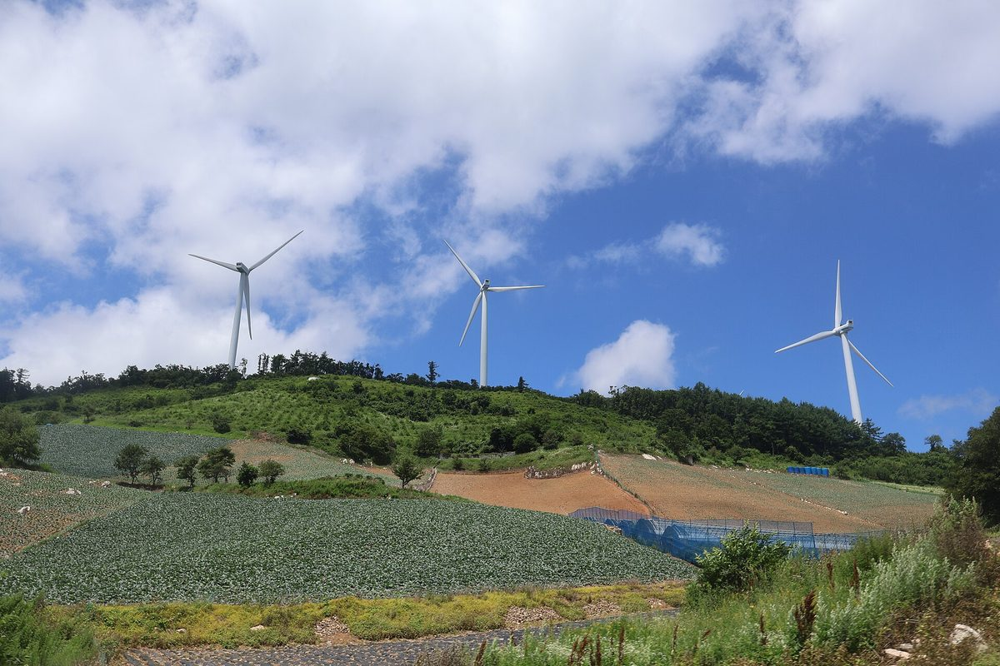

이헌승 의원, 주민참여 태양광 274건 20년 예상 수입 중 REC가 약 48%라며 햇빛소득마을 전기요금 부담 공개 요구

에너지공단 자료 분석…20년 전력판매 4조109억 원·REC 약 3조7,200억 원 추산, 기후에너지환경부·에너지공단 반론은 아직 안 나와
이헌승 국민의힘 의원(부산 부산진구을)은 26일 주민참여 태양광사업의 예상 수입 가운데 절반 가까이가 전기요금으로 뒷받침되는 신재생에너지 공급인증서(REC) 몫이라고 주장하며, 정부가 햇빛소득마을 확대에 앞서 국민의 전기요금 부담부터 공개해야 한다고 요구했다. 이 의원이 한국에너지공단에서 받은 주민참여 태양광사업 274건 자료를 분석한 결과, 20년 동안의 예상 전력판매수입은 4조109억 원, REC 수입은 약 3조7,200억 원으로 추산돼 전체 예상 수입에서 REC가 차지하는 비중이 약 48%였다. 추계에는 전력판매단가(SMP) kWh당 86.35원, 태양광 이용률 15.4%, REC 단가 7만1,310원이 적용됐으며, 274건은 에너지공단이 집계한 주민참여 태양광사업으로 정부가 선정한 햇빛소득마을 수와는 다른 집계다. 274건의 초기 사업비는 모두 2조7,684억 원으로, 의원실은 전력판매수입에서 이를 빼면 약 1조2,400억 원이 남는데 REC 수입은 그 약 3배라고 계산했다. 이 의원은 REC 비용이 전기요금에 반영되는 만큼 주민 소득을 늘릴수록 국민 부담도 함께 커지는 구조라며 "국민 전기요금으로 지원하는 돈을 마치 햇빛과 바람만으로 벌어들이는 소득처럼 홍보해서는 안 된다"고 지적했다. 이 주장에 대한 기후에너지환경부와 한국에너지공단의 입장은 아직 나오지 않았다.
시민에너지 관점
REC가 예상 수입의 약 48%라는 숫자는 재생에너지 지원 비용을 누가 내고 누가 받는지 따져 보자는 물음으로 받아들일 만하다. 다만 REC는 햇빛소득마을만이 아니라 대형 발전사와 외부 사업자의 태양광·풍력에도 똑같이 돌아가는 지원이어서, 같은 돈이 외지 자본의 수익이 되느냐 마을 주민의 소득이 되느냐가 다를 뿐이다. 독일은 전기요금에 붙이던 재생에너지 지원 부담금(EEG 부과금)을 2022년 7월부터 0으로 내리고 그 비용을 연방 기금에서 대도록 바꿔, 지원 비용을 어느 주머니에서 낼지도 정책으로 정할 수 있음을 보여 줬다. 정부는 요금 부담 추계를 투명하게 공개해 논쟁의 바탕을 같게 하고, 같은 지원금이라면 주민 지분과 지역 소유로 돌아가는 사업부터 늘리는 원칙을 세워야 한다.
출처: 에너지플랫폼뉴스 2026-10-26 김예나 원문 보기
イ・ホンスン議員、住民参加型太陽光274件の20年予想収入のうちRECが約48%と主張…太陽光所得村の電気料金負担の公開を要求
エネルギー公団の資料を分析…20年間の売電収入4兆109億ウォン・REC約3兆7,200億ウォンと推計、気候エネルギー環境部・エネルギー公団の反論はまだ出ていない
国民の力のイ・ホンスン国会議員（釜山・釜山鎮区乙）は26日、住民参加型太陽光事業の予想収入の半分近くが電気料金で支えられる再生可能エネルギー供給認証書（REC）の分だと主張し、政府は太陽光所得村の拡大に先立って国民の電気料金負担をまず公開すべきだと求めた。イ議員が韓国エネルギー公団から受け取った住民参加型太陽光事業274件の資料を分析したところ、20年間の予想売電収入は4兆109億ウォン、REC収入は約3兆7,200億ウォンと推計され、予想収入全体に占めるRECの割合は約48%だった。推計には系統限界価格（SMP）1kWh当たり86.35ウォン、太陽光の設備利用率15.4%、REC単価7万1,310ウォンが適用されており、274件はエネルギー公団が集計した住民参加型太陽光事業で、政府が選定した太陽光所得村の数とは別の集計だ。274件の初期事業費は計2兆7,684億ウォンで、議員室は売電収入からこれを差し引くと約1兆2,400億ウォンが残るが、REC収入はその約3倍になると計算した。イ議員は、RECの費用は電気料金に反映されるため、住民の所得を増やすほど国民の負担も一緒に大きくなる構造だとし、「国民の電気料金で支援するお金を、まるで日差しと風だけで稼いだ所得のように宣伝してはならない」と指摘した。この主張に対する気候エネルギー環境部と韓国エネルギー公団の立場はまだ示されていない。
市民エネルギーの視点
RECが予想収入の約48%を占めるという数字は、再生可能エネルギーの支援費用を誰が払い誰が受け取るのかを問い直す問題提起として受け止めるべきだ。ただしRECは太陽光所得村だけでなく、大手発電会社や外部事業者の太陽光・風力にも同じように支払われる支援であり、違うのは同じお金が域外資本の利益になるのか、集落住民の所得になるのかという点だけだ。ドイツは電気料金に上乗せしていた再エネ賦課金（EEG賦課金）を2022年7月からゼロに引き下げ、その費用を連邦の基金から賄う形に改めており、支援費用をどの財布から出すかも政策で決められることを示した。政府は料金負担の推計を透明に公開して議論の土台をそろえ、同じ支援金であれば住民の持ち分と地域所有に還る事業から増やすという原則を打ち立てるべきだ。
出典: エネルギープラットフォームニュース（Energy Platform News） 2026-10-26 キム・イェナ 原文を読む
韩国议员Lee Heon-seung称居民参与型光伏274个项目20年预期收入中REC约占48%，要求公开阳光收入村的电费负担
分析能源公团资料…推算20年售电收入4.0109万亿韩元、REC约3.72万亿韩元，气候能源环境部和能源公团尚未回应
韩国国民力量党国会议员Lee Heon-seung（釜山釜山镇区乙）26日表示，居民参与型光伏项目的预期收入中近一半来自由电费支撑的可再生能源供应证书（REC），并要求政府在扩大阳光收入村之前，先公开由此给国民带来的电费负担。Lee议员分析韩国能源公团提交的274个居民参与型光伏项目资料后推算，20年间预期售电收入为4.0109万亿韩元，REC收入约3.72万亿韩元，REC在全部预期收入中约占48%。推算采用的条件是系统边际电价（SMP）每kWh 86.35韩元、光伏利用率15.4%、REC单价7.131万韩元；这274个项目是能源公团统计的居民参与型光伏项目，与政府评选的阳光收入村数量属于不同口径。274个项目的初期投资合计2.7684万亿韩元，议员办公室计算称，从售电收入中扣除这笔投资后约剩1.24万亿韩元，而REC收入约为其3倍。Lee议员表示，REC成本会反映到电费中，因此居民收入越增加，国民的负担也随之加重，并指出“不应把用国民电费补贴的钱，宣传成仿佛只靠阳光和风赚来的收入”。气候能源环境部和韩国能源公团对此尚未表明立场。
市民能源视角
REC约占预期收入48%这一数字，应当被视为追问可再生能源补贴成本由谁承担、由谁获得的问题。不过，REC不只发给阳光收入村，大型发电企业和外部开发商的光伏、风电项目同样可以获得，区别只在于同一笔钱是成为外来资本的利润，还是成为村民的收入。德国从2022年7月起把附加在电费上的可再生能源附加费（EEG附加费）降为零，改由联邦基金承担，说明补贴成本从哪个口袋支出也可以由政策决定。政府应透明公开电费负担的推算，让讨论有共同的基础；同样的补贴，应优先投向回归居民股份和地方所有的项目。
来源: Energy Platform News 2026-10-26 Kim Ye-na 查看原文
Lawmaker Lee Heon-seung says RECs make up about 48% of 20-year expected revenue from 274 resident-participation solar projects and calls for disclosure of the electricity bill burden of Sunlight Income Villages
Analysis of Korea Energy Agency data estimates 4.0109 trillion won from power sales and about 3.72 trillion won from RECs over 20 years; no response yet from the climate ministry or the agency
Lee Heon-seung, a People Power Party lawmaker representing Busanjin-gu B in Busan, argued on the 26th that nearly half of the expected revenue of resident-participation solar projects comes from renewable energy certificates (RECs) backed by electricity bills, and demanded that the government disclose the burden on consumers' bills before expanding the Sunlight Income Village programme. Analysing Korea Energy Agency data on 274 resident-participation solar projects, Lee's office estimated 20-year expected power sales revenue at 4.0109 trillion won and REC revenue at about 3.72 trillion won, putting the REC share of total expected revenue at about 48%. The estimate assumes a system marginal price (SMP) of 86.35 won per kWh, a solar capacity factor of 15.4% and an REC price of 71,310 won; the 274 projects are the agency's count of resident-participation solar projects and are a different tally from the number of villages the government has selected as Sunlight Income Villages. Initial project costs for the 274 projects total 2.7684 trillion won, and the lawmaker's office calculated that subtracting them from power sales revenue leaves about 1.24 trillion won, roughly a third of expected REC revenue. Lee said that because REC costs are passed on through electricity bills, raising residents' income also raises the public's burden, adding that "money supported by the public's electricity bills should not be advertised as if it were income earned from sunlight and wind alone." The Ministry of Climate, Energy and Environment and the Korea Energy Agency have not yet responded to the claim.
Citizen Energy View
The figure that RECs account for about 48% of expected revenue is a fair prompt to ask who pays for renewable support and who receives it. But RECs are paid not only to Sunlight Income Villages but equally to the solar and wind projects of large generators and outside developers; the only difference is whether the same money becomes profit for outside capital or income for village residents. Germany cut the renewable surcharge on electricity bills (the EEG levy) to zero from July 2022 and shifted the cost to a federal fund, showing that which pocket pays for support is itself a policy choice. The government should publish its estimates of the bill burden so the debate starts from the same facts, and set a rule that, for the same subsidy, projects that return ownership stakes and local control to residents come first.
Source: Energy Platform News 2026-10-26 Kim Ye-na Read the original